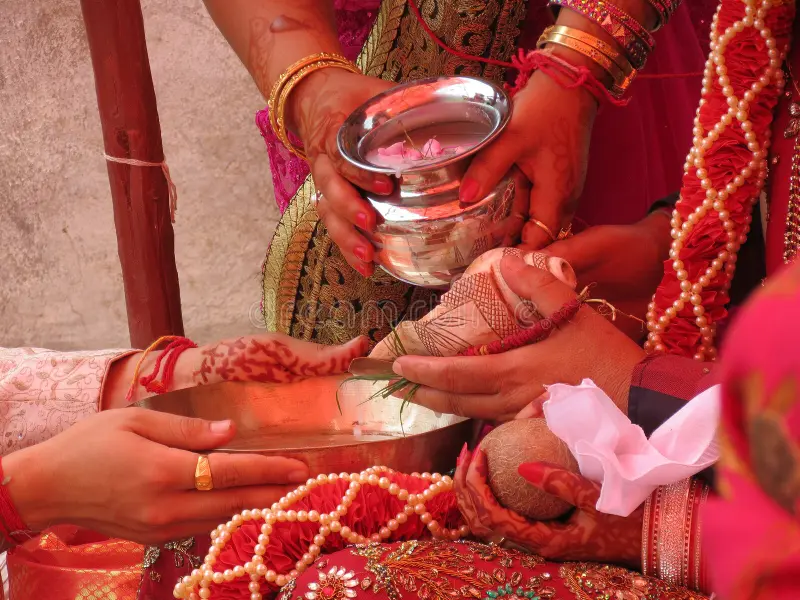
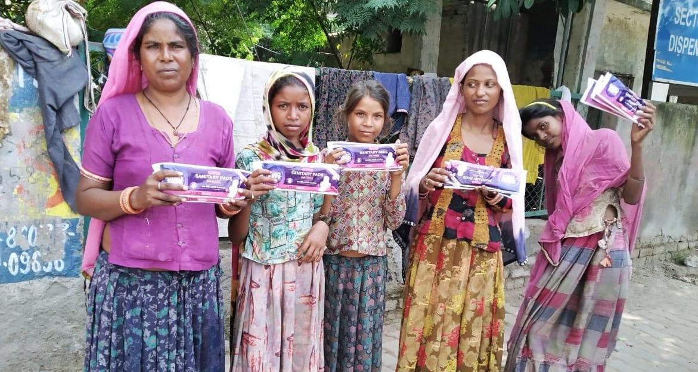
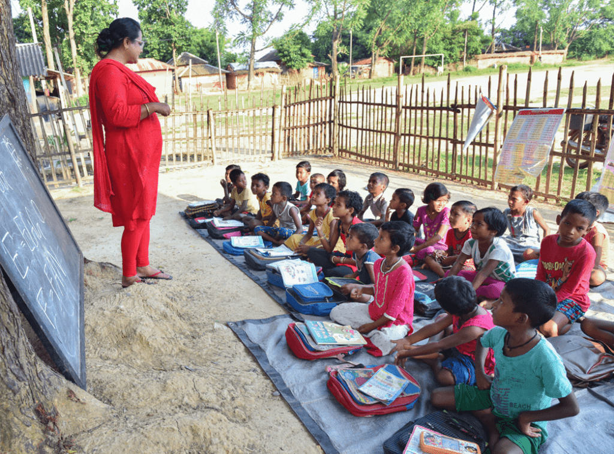
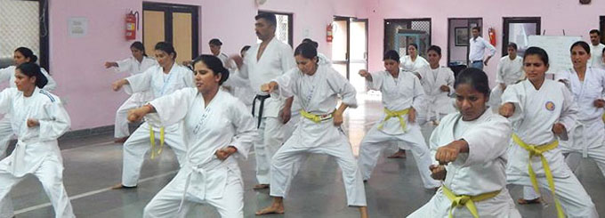
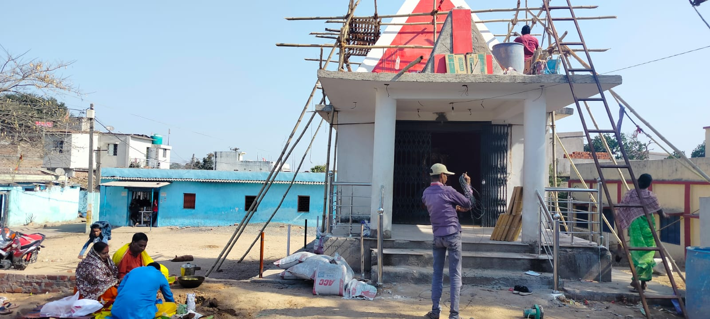
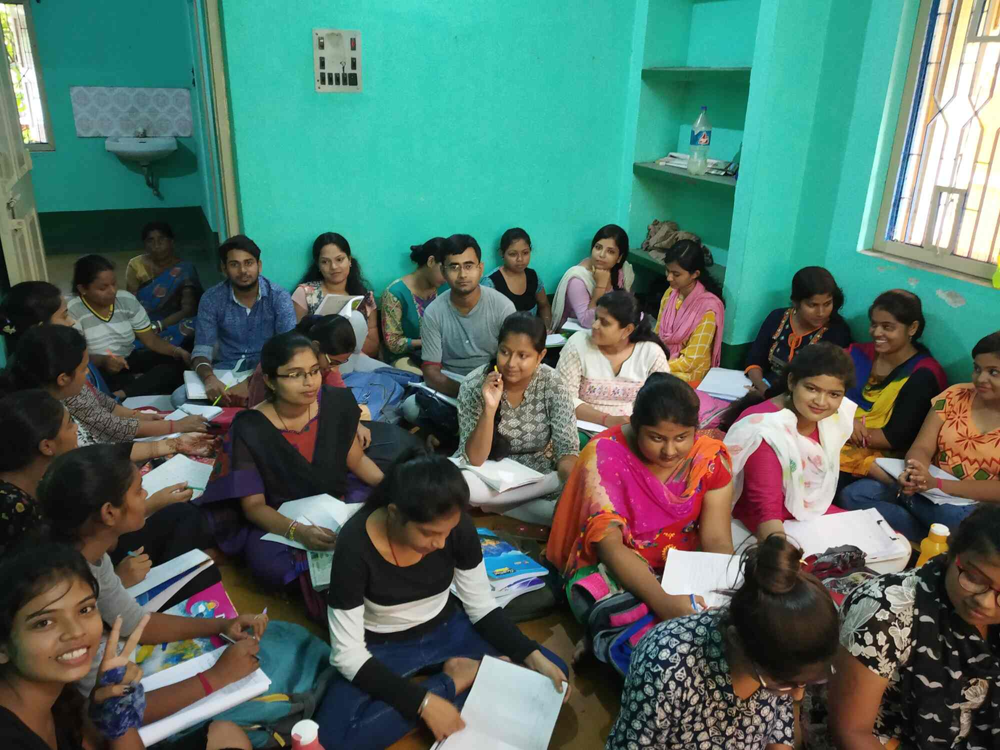
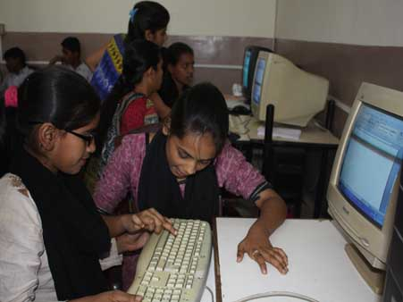
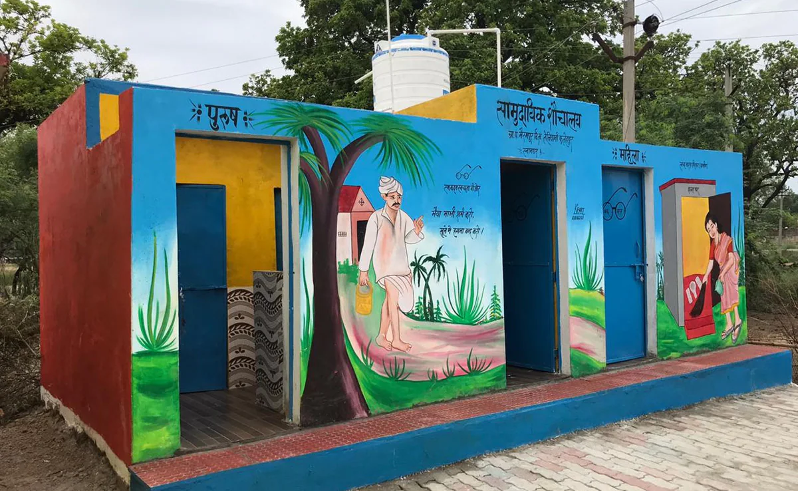

Our Projects
हमारे प्रोजेक्ट्स
Discover the impact of our initiatives through these moments captured in our work.
हमारे कार्यों में कैद इन पलों के माध्यम से हमारी पहलों का प्रभाव जानें।
Kanyadaan for Poor Women.
We are currently working on Kanyadaan to empower underprivileged women who cannot afford marriage expenses, helping them start a new chapter with dignity and hope.
हम वर्तमान में कन्यादान पर काम कर रहे हैं ताकि वंचित महिलाओं को सशक्त बनाया जा सके जो शादी के खर्च वहन नहीं कर सकतीं, उन्हें गरिमा और आशा के साथ नया जीवन शुरू करने में मदद करना।

Health Initiatives.
Providing essential healthcare services and medical camps to improve the well-being of underserved communities, ensuring access to quality health support.
वंचित समुदायों के कल्याण के लिए आवश्यक स्वास्थ्य सेवाएँ और मेडिकल कैंप प्रदान करना, गुणवत्तापूर्ण स्वास्थ्य सहायता तक पहुँच सुनिश्चित करना।

Distributed Pads to Poor Women.
Providing sanitary pads to underprivileged women during menstruation, we promote health, dignity, and confidence. This initiative breaks taboos and empowers women to live freely.
वंचित महिलाओं को मासिक धर्म के दौरान सैनिटरी पैड प्रदान कर, हम स्वास्थ्य, गरिमा और आत्मविश्वास को बढ़ावा देते हैं। यह पहल रूढ़ियों को तोड़कर महिलाओं को स्वतंत्रता देती है।

Education for Poor Children.
We provide free education to poor children, unlocking their potential and breaking the cycle of poverty. Every child deserves the chance to dream big.
हम गरीब बच्चों को मुफ्त शिक्षा प्रदान करते हैं, उनकी क्षमता को उजागर कर गरीबी के चक्र को तोड़ते हैं। प्रत्येक बच्चा बड़े सपने देखने का हकदार है।

Summer Camp for Youth.
Our summer camps teach judo, self-defense, and life skills, empowering youth with confidence and discipline. These programs foster strength and resilience in our community.
हमारे ग्रीष्मकालीन शिविर जूडो, आत्मरक्षा और जीवन कौशल सिखाते हैं, जो युवाओं को आत्मविश्वास और अनुशासन प्रदान करते हैं। ये कार्यक्रम हमारे समुदाय में ताकत और लचीलापन बढ़ाते हैं।

Building Temples.
We construct temples to foster spiritual growth and community unity, providing sacred spaces for worship and reflection. These sanctuaries strengthen cultural values and inspire hope.
हम आध्यात्मिक विकास और सामुदायिक एकता को बढ़ावा देने के लिए मंदिर बनाते हैं, जो पूजा और चिंतन के लिए पवित्र स्थान प्रदान करते हैं। ये तीर्थस्थल सांस्कृतिक मूल्यों को मजबूत करते हैं और आशा प्रेरित करते हैं।

Coaching for Competitive Exams.
Offering free coaching for Navodaya, Sainik, Netarhat, Simultala, and police exams, we pave the way for underprivileged students’ success. Education is their path to a brighter future.
नवोदय, सैनिक, नेतरहाट, सिमुलतला और पुलिस परीक्षाओं के लिए मुफ्त कोचिंग प्रदान कर, हम वंचित छात्रों के लिए सफलता का मार्ग प्रशस्त करते हैं। शिक्षा उनका उज्जवल भविष्य है।

Computer Literacy Program.
Our computer literacy program equips underprivileged individuals with digital skills for a modern world. Technology opens doors to opportunity and empowerment.
हमारा कंप्यूटर साक्षरता कार्यक्रम वंचित व्यक्तियों को आधुनिक दुनिया के लिए डिजिटल कौशल प्रदान करता है। प्रौद्योगिकी अवसर और सशक्तिकरण के द्वार खोलती है।

Building Toilets.
During the Swachh Bharat Abhiyan initiated by PM Modi, we built toilets to promote sanitation and cleanliness, enhancing the quality of life for rural communities.
पीएम मोदी द्वारा शुरू किए गए स्वच्छ भारत अभियान के दौरान, हमने स्वच्छता और सफाई को बढ़ावा देने के लिए शौचालय बनाए, जिससे ग्रामीण समुदायों के जीवन की गुणवत्ता में सुधार हुआ।

Helping People During COVID.
Extending support during the COVID-19 pandemic by providing medical supplies, awareness campaigns, and aid to those affected, standing strong in crisis.
COVID-19 महामारी के दौरान चिकित्सा आपूर्ति, जागरूकता अभियान और प्रभावित लोगों को सहायता प्रदान करके समर्थन देना, संकट में दृढ़ता से खड़े रहना।

Distributing Food.
Distributing food to alleviate hunger among the needy, ensuring no one in our community goes without a meal, spreading care and compassion.
जरूरतमंदों में भूख मिटाने के लिए भोजन वितरण, यह सुनिश्चित करना कि हमारे समुदाय में कोई भोजन के बिना न रहे, देखभाल और करुणा फैलाना।